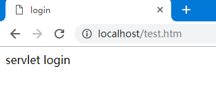
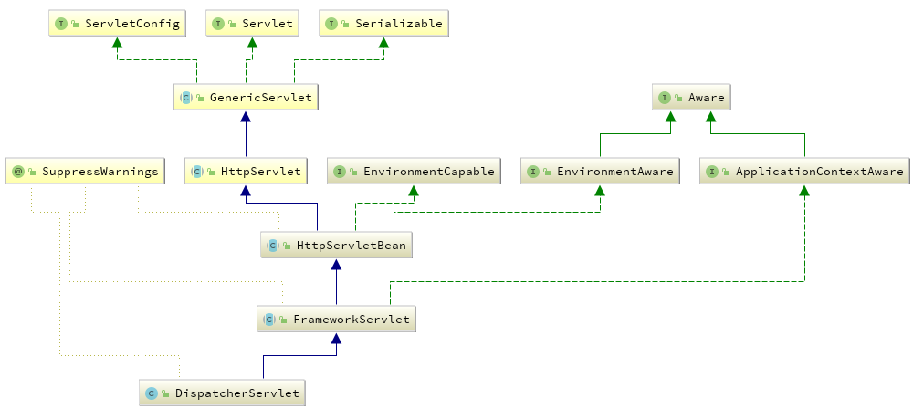

Spring源码分析（30）DispatcherServlet
摘要: 本文结合《Spring源码深度解析》来分析Spring 5.0.6版本的源代码。若有描述错误之处，欢迎指正。
在Spring中，ContextLoaderListener只是助功能，用于创建WebApplicationContext类型实例，而真正的逻辑实现实是在DispatcherServlet中进行的，DispatcherServlet是实现servlet接口的实现类。
servlet简介
servlet是一个Java编写的程序，此程序是基于HTTP协议的，在服务器端运行的（如Tomcat),是按照servlet规范编写的一个Java类。主要是处理客户端的请求并将其结果发送到客户端。servlet的生命周期是由servlet的容器来控制的，它可以分为3个阶段：初始化、运行和销毁。
1.初始化阶段
servlet容器加载servlet类，把servlet类的.class文件中的数据读到内存中。
servlet容器创建一个ServletConfig对象。ServletConfig对象包含了servlet的初始化配直信息。
servlet容器创建一个servlet对象。
servlet容器调用servlet对象的init方法进行初始化。
2.运行阶段
当servlet容器接收到一个请求时，servlet容器会针对这个请求创建servletRequest和servletResponse对象，然后调用service方法。并把这两个参数传递给service方法。service方法通过servletRequest对象获得请求的信息。并处理该请求。再通过servletResponse对象生成这个请求的响应结果。然后销毁servIetRequest和servletResponse对象。我们不管这个请求是post提交的还是get提交的，最终这个请求都会由service方法来处理
3.销毁阶段
当Web用被终止时，servlet容器会先调用servlet对象的destrory方法，然后再销毁servlet对象，同时也会销毁与servlet对象相关联的servletConfig对象。我们可以在destroy方法实现中，释放servlet所占用的资源，如关闭数据库连接，关闭文件输入输出流等。
servlet框架是由两个Java包组成：javax.servlet和javax.servlet.http。javax.servlet包中定义了所有的servlet类都必须实现或扩展的通用接口和类，在javax.servlet.http包中定义了采用HTTP通信协议的HttpServlet类。
servlet被设计成请求驱动，servlet的请求可能包含多个数据项，当Web容器接收到某个servlet请求，servlet把请求封装成一个HttpServletRequest对象，然后把对象传给servlet的对应的服务方法。
HTTP的请求方式包括delete、get、options、post、put和trace，在HttpServlet类中分别提供了相应的服务方法，它们是doDelete()、doGet()、doOptions()、doPost()、doPut()和ldoTrace()。
servlet的使用
下面以最简单的servlet快速体验其用法。
1.创建servlet
public class MyServlet extends HttpServlet {
@Override
public void init() throws ServletException {
// 启动时会执行该方法
System.out.println("初始化方法");
}
@Override
protected void doGet(HttpServletRequest req, HttpServletResponse resp) throws ServletException, IOException {
handleLogin(req,resp);
}
@Override
protected void doPost(HttpServletRequest req, HttpServletResponse resp) throws ServletException, IOException {
handleLogin(req,resp);
}
private void handleLogin(HttpServletRequest req, HttpServletResponse resp) {
System.out.println("start login");
ServletContext context =getServletContext();
RequestDispatcher rd = null;
// 定向页面
rd = context.getRequestDispatcher("/login.jsp");
try {
rd.forward(req,resp);
} catch (ServletException e) {
e.printStackTrace();
} catch (IOException e) {
e.printStackTrace();
}
}
}雀虽小，五脏俱全。实例中包含了对init方法和get/post方法的处理，init方法保证在Servlet加载的时候能做一些逻辑操作，而HttpServlet类则会帮助我们根据方法类型的不同而将逻辑引人不同的函数。在子类中我们只需要重写对应的函数逻辑便可，如以上代码重写了doGet和doPost方法井将逻辑处理部分引导至handleLogic函数中，最后，又将页面跳转至index.jsp。
2.添加配置
为了使servlet能够正常使用,需要在web.xml文件中添加以下配置：
<?xml version="1.0" encoding="utf-8"?>
<web-app xmlns:xsi="http://www.w3.org/2001/XMLSchema-instance"
xmlns="http://java.sun.com/xml/ns/javaee"
xsi:schemaLocation="http://java.sun.com/xml/ns/javaee http://java.sun.com/xml/ns/javaee/web-app_2_5.xsd"
id="springMvc" version="2.5">
<display-name>spring mvc</display-name>
<servlet>
<servlet-name>login</servlet-name>
<servlet-class>MyServlet</servlet-class>
<load-on-startup>1</load-on-startup>
</servlet>
<servlet-mapping>
<servlet-name>login</servlet-name>
<url-pattern>*.htm</url-pattern>
</servlet-mapping>
</web-app>
配置后便可以根据对应的配置访问相应的路径了。
访问测试，已生效，
DispatcherServlet的初始化
根据类图查看源码
在servlet初始化阶段会调用其init方法，所以我们首先要查在DispatcherServlet中是否重写了init方法。我们在其父类HttpServletBean中找到了该方法。
public final void init() throws ServletException {
if (logger.isDebugEnabled()) {
logger.debug("Initializing servlet '" + getServletName() + "'");
}
// Set bean properties from init parameters.
// 解析init-param参数并封装之pvs中
PropertyValues pvs = new ServletConfigPropertyValues(getServletConfig(), this.requiredProperties);
if (!pvs.isEmpty()) {
try {
// 将当前servlet类转化为一个BeanWrapper,从而能够以Spring的方式对init-param的进行注入
BeanWrapper bw = PropertyAccessorFactory.forBeanPropertyAccess(this);
ResourceLoader resourceLoader = new ServletContextResourceLoader(getServletContext());
// 注册自定义属性编辑器，一旦遇到Resource类型的属性将会使用ResourceEditor进行解析
bw.registerCustomEditor(Resource.class, new ResourceEditor(resourceLoader, getEnvironment()));
// 空实现，留个子类覆盖
initBeanWrapper(bw);
// 属性注入
bw.setPropertyValues(pvs, true);
}
catch (BeansException ex) {
if (logger.isErrorEnabled()) {
logger.error("Failed to set bean properties on servlet '" + getServletName() + "'", ex);
}
throw ex;
}
}
// Let subclasses do whatever initialization they like.
// 留个子类扩展
initServletBean();
if (logger.isDebugEnabled()) {
logger.debug("Servlet '" + getServletName() + "' configured successfully");
}
}DipatcherServlet的初始化过程主要是通过将当前的servlet类型实例转换为BeanWrapper类型实例，以便使用Spring中提供的注入功能进行对应属性的注入。这些属性如contextAttribute、contextClass、nameSpace、contextConfigLocation等，都可以在web.xml文件中以初始化参数的方式配置在servlet的声明中。DispatcherServlet继承自FrameworkServlet,FrameworkServlet类上包含对应的同名属性，Spring会保证这些参数被注入到对应的值中。属性注入主要包含以下几个步骤。
1.封装及验证初始化参数
ServletConfigPropertyValues除了封装属性外还有对属性验证的功能。
public ServletConfigPropertyValues(ServletConfig config, Set<String> requiredProperties)
throws ServletException {
Set<String> missingProps = (!CollectionUtils.isEmpty(requiredProperties) ?
new HashSet<>(requiredProperties) : null);
Enumeration<String> paramNames = config.getInitParameterNames();
while (paramNames.hasMoreElements()) {
String property = paramNames.nextElement();
Object value = config.getInitParameter(property);
addPropertyValue(new PropertyValue(property, value));
if (missingProps != null) {
missingProps.remove(property);
}
}
// Fail if we are still missing properties.
if (!CollectionUtils.isEmpty(missingProps)) {
throw new ServletException(
"Initialization from ServletConfig for servlet '" + config.getServletName() +
"' failed; the following required properties were missing: " +
StringUtils.collectionToDelimitedString(missingProps, ", "));
}
}代码中得知，封装属性主要是对初始化的参数进行封装，也就是servlet中配置的<init-param>中配置的封装。当然，用户可以通过对requiredProperties参数的初始化来强制验证某些属性的必要性，这样，在属性封装的过程中，一旦检测到requiredProperties中的属性没有指定初始值，就会抛出异常。
2.将当前servlet实例转化成BeanWrapper实例
PropertyAccessorFactory.forBeanPropertyAccess是Spring中提供的具方法，主要用于将指定实例转化为Spring中可以处理的BeanWrapper类型的实例。
3.注册相对于Resource的属性编辑器
属性编辑器，我们在上文中已经介绍并且分析过其原理，这里使用属性编辑器的目的是在对当前实例（DispatcherServlet）属性注入过程中一旦遇到Resource类型的属性就会使用ResourceEditor去解析。
4.属性注入
BeanWrapper为Spring中的方法，支持Spring的自动注入。其实我们最常用的属性注入无非是contextAttribute、contextClass、nameSpace、contextConfigLocation等。
5.servletBean的初始化
在ContextLoaderListener加载的时候已经创建了WebApplicationContext实例，而在这个函数中最重要的就是对这个实例进行进一步的补充初始化。
继续查看initServletBean()。父类FrameworkServlet盖了HttpServletBean中的initServletBean函数，如下：
protected final void initServletBean() throws ServletException {
getServletContext().log("Initializing Spring FrameworkServlet '" + getServletName() + "'");
if (logger.isInfoEnabled()) {
logger.info("FrameworkServlet '" + getServletName() + "': initialization started");
}
// 开始时间
long startTime = System.currentTimeMillis();
try {
this.webApplicationContext = initWebApplicationContext();
// 设计为子类覆盖
initFrameworkServlet();
}
catch (ServletException | RuntimeException ex) {
logger.error("Context initialization failed", ex);
throw ex;
}
if (logger.isInfoEnabled()) {
// 初始化耗时
long elapsedTime = System.currentTimeMillis() - startTime;
logger.info("FrameworkServlet '" + getServletName() + "': initialization completed in " +
elapsedTime + " ms");
}
}上面的函数设计了计时器来统计初始化的执行时间，而且提供了一个扩展方法initFrameworkServlet()用于子类的覆盖操作，而作为关键的初始化逻辑实现委托给了initWebApplicationContext()。
WebApplicationContext的初始化
initWebApplicationContext函数的主要工作就是创建或刷新WebApplicationContext实例并对servlet功能所使用的变量进行初始化。
protected WebApplicationContext initWebApplicationContext() {
WebApplicationContext rootContext =
WebApplicationContextUtils.getWebApplicationContext(getServletContext());
WebApplicationContext wac = null;
if (this.webApplicationContext != null) {
// A context instance was injected at construction time -> use it
// context示例在构造函数被注入
wac = this.webApplicationContext;
if (wac instanceof ConfigurableWebApplicationContext) {
ConfigurableWebApplicationContext cwac = (ConfigurableWebApplicationContext) wac;
if (!cwac.isActive()) {
// The context has not yet been refreshed -> provide services such as
// setting the parent context, setting the application context id, etc
if (cwac.getParent() == null) {
// The context instance was injected without an explicit parent -> set
// the root application context (if any; may be null) as the parent
cwac.setParent(rootContext);
}
// 刷新上下文环境
configureAndRefreshWebApplicationContext(cwac);
}
}
}
if (wac == null) {
// No context instance was injected at construction time -> see if one
// has been registered in the servlet context. If one exists, it is assumed
// that the parent context (if any) has already been set and that the
// user has performed any initialization such as setting the context id
// 根据contextAttibute属性加载WebApplicationContext
wac = findWebApplicationContext();
}
if (wac == null) {
// No context instance is defined for this servlet -> create a local one
wac = createWebApplicationContext(rootContext);
}
if (!this.refreshEventReceived) {
// Either the context is not a ConfigurableApplicationContext with refresh
// support or the context injected at construction time had already been
// refreshed -> trigger initial onRefresh manually here.
synchronized (this.onRefreshMonitor) {
onRefresh(wac);
}
}
if (this.publishContext) {
// Publish the context as a servlet context attribute.
String attrName = getServletContextAttributeName();
getServletContext().setAttribute(attrName, wac);
if (this.logger.isDebugEnabled()) {
this.logger.debug("Published WebApplicationContext of servlet '" + getServletName() +
"' as ServletContext attribute with name [" + attrName + "]");
}
}
return wac;
}于本函数中的初始化主要包含几个部分。
1.寻找或或创建对应的WebApplicationContext实例
WebApplicationContext的寻找及创建包括以下几个步骤
1.通过构造函数的注入进行初始化
当进入initWebApplicationContext函数后通过判断this.webApplicationContext!=null后，便可以确定this.webApplicationContext是否是通过构造函数来初始化的。可是有读者可能会有疑问，在initServletBean函数中明明是把创好的实例记录在了this.webApplicationContext中：
this.webApplicationContext = initWebApplicationContext();何以判定这个数是通过构造函数初始化，而不是通过上一次的函数返回值初始化呢？如果存在这个问题，那么就是读者忽略一个问题了：在Web中包含SpringWeb的核心逻辑的DispatcherServlet只可以被声明为一次，在Spring中已经存在验证，所以这就确保了如果this.webApplicationContext != null，则可以直接判定this.webApplicationContext已经通过构造函数初始化。
2.通过contextAttribute进行初始化
过在web.xml文件中配置的servlet参数contextAttribute来查找ServletContext中对应的属性，默认为WebApplicationContext.class.getName() + “.ROOT”，也就是在ContextLoaderListener加载时会创建WebApplicationContext实例，并将实例以WebApplicationContext.class.getName() + “.ROOT”为key放入ServletContext中，当然读者可以重写初始化逻辑使用自己创建的WebApplicationContext，并在servlet的配置中通过初始化参数contextAttribute指定key。
protected WebApplicationContext findWebApplicationContext() {
String attrName = getContextAttribute();
if (attrName == null) {
return null;
}
WebApplicationContext wac =
WebApplicationContextUtils.getWebApplicationContext(getServletContext(), attrName);
if (wac == null) {
throw new IllegalStateException("No WebApplicationContext found: initializer not registered?");
}
return wac;
}3.重新创建WebApplicationContext实例
如果通过以上两种方式并没有找到任何突破，那就没办法了，只能在这里重新创建新的实例了。
protected WebApplicationContext createWebApplicationContext(@Nullable WebApplicationContext parent) {
// 继续跟踪代码->代码1
return createWebApplicationContext((ApplicationContext) parent);
}
// 继续跟踪代码>>代码1
protected WebApplicationContext createWebApplicationContext(@Nullable ApplicationContext parent) {
// 获取servlet的初始化参数contextClass,如果没有配置默认XmlWebApplicationContext.class
Class<?> contextClass = getContextClass();
if (this.logger.isDebugEnabled()) {
this.logger.debug("Servlet with name '" + getServletName() +
"' will try to create custom WebApplicationContext context of class '" +
contextClass.getName() + "'" + ", using parent context [" + parent + "]");
}
if (!ConfigurableWebApplicationContext.class.isAssignableFrom(contextClass)) {
throw new ApplicationContextException(
"Fatal initialization error in servlet with name '" + getServletName() +
"': custom WebApplicationContext class [" + contextClass.getName() +
"] is not of type ConfigurableWebApplicationContext");
}
// 通过反射方式实例化contextClass
ConfigurableWebApplicationContext wac =
(ConfigurableWebApplicationContext) BeanUtils.instantiateClass(contextClass);
wac.setEnvironment(getEnvironment());
// parent为在ContextLoderListener中创建的实例
wac.setParent(parent);
// 获取contextConfigLocation的属性，配置在Servlet初始化参数中
String configLocation = getContextConfigLocation();
if (configLocation != null) {
wac.setConfigLocation(configLocation);
}
// 初始化spring环境包括加载配置文件
configureAndRefreshWebApplicationContext(wac);
return wac;
}
2.configureAndRefreshWebApplicationContext
无论是通过构造函数注入还是单独创建，都会调用configureAndRefreshWebApplicationContext方法来对已经创建的WebApplicationContext实例进行配置及刷新，那么这个步骤又做了哪些工作呢？
protected void configureAndRefreshWebApplicationContext(ConfigurableWebApplicationContext wac) {
if (ObjectUtils.identityToString(wac).equals(wac.getId())) {
// The application context id is still set to its original default value
// -> assign a more useful id based on available information
if (this.contextId != null) {
wac.setId(this.contextId);
}
else {
// Generate default id...
wac.setId(ConfigurableWebApplicationContext.APPLICATION_CONTEXT_ID_PREFIX +
ObjectUtils.getDisplayString(getServletContext().getContextPath()) + '/' + getServletName());
}
}
wac.setServletContext(getServletContext());
wac.setServletConfig(getServletConfig());
wac.setNamespace(getNamespace());
wac.addApplicationListener(new SourceFilteringListener(wac, new ContextRefreshListener()));
// The wac environment's #initPropertySources will be called in any case when the context
// is refreshed; do it eagerly here to ensure servlet property sources are in place for
// use in any post-processing or initialization that occurs below prior to #refresh
ConfigurableEnvironment env = wac.getEnvironment();
if (env instanceof ConfigurableWebEnvironment) {
((ConfigurableWebEnvironment) env).initPropertySources(getServletContext(), getServletConfig());
}
postProcessWebApplicationContext(wac);
applyInitializers(wac);
// 加载配置文件整合parent到wac
wac.refresh();
}无论调用方式如何变化，只要是用AlicationContext所提供的功能最后都免不了使用公共父类AstractApplicationContext供的refresh() 进行配置文件加载。
3.刷新
onRefresh是FrameworkServlet类中提供的模板方法，在其子类DispatcherServlet中进行了重写，主要用于新pring在Web功能实现中所必须使用的全局变量。下面我们会介绍它们的初始化过程以及使用场景，而至于具体的使用细节会在稍后的章节中再做详细介绍。
protected void onRefresh(ApplicationContext context) {
// 继续跟踪代码->代码1
initStrategies(context);
}
// 继续跟踪代码>>代码1
protected void initStrategies(ApplicationContext context) {
// 文件上传
initMultipartResolver(context);
// 国际化
initLocaleResolver(context);
// 主题
initThemeResolver(context);
// 映射
initHandlerMappings(context);
// 适配器
initHandlerAdapters(context);
// 异常处理
initHandlerExceptionResolvers(context);
// 视图
initRequestToViewNameTranslator(context);
// view
initViewResolvers(context);
// 属性暂存： 重定向
initFlashMapManager(context);
}1.初始化MultipartResolver
在Spring中，MultipartResolver主要用来处理文件上传。默认情况下，Spring是没有multipart处理的，因为一些开发者想要自己处理它们如果想使用Spring的multipart，则需要在Web应用的上下文中添加multipart解析器。这样，每个请求就会被检查是否包含multipart。然而，如果请求中包含multipart，那么上下文中定义的MultipartResolver就会解析它，这样请求multipart属性就会像其他属性一样被处理。常用配置如下：
<bean id="multipartResolver" class="org.springframework.web.multipart.commons.CommonsMultipartResolver">
<!-- 上传文件的最大字节数 -->
<property name="maxUploadSize" value="10000"/>
</bean>当然，CommonsMultipartResolver还提供了其他功能用于帮助用户完成上传功能，有兴趣的读者可以进一步查看。那么MultipartResolver就是在initMultipartResolver中被加入到DispatcherServlet中的。
private void initMultipartResolver(ApplicationContext context) {
try {
// String MULTIPART_RESOLVER_BEAN_NAME = "multipartResolver";
this.multipartResolver = context.getBean(MULTIPART_RESOLVER_BEAN_NAME, MultipartResolver.class);
if (logger.isDebugEnabled()) {
logger.debug("Using MultipartResolver [" + this.multipartResolver + "]");
}
}
catch (NoSuchBeanDefinitionException ex) {
// Default is no multipart resolver.
this.multipartResolver = null;
if (logger.isDebugEnabled()) {
logger.debug("Unable to locate MultipartResolver with name '" + MULTIPART_RESOLVER_BEAN_NAME +
"': no multipart request handling provided");
}
}
}
因为之前的步骤已经完成了Spring中配置文件的析，所以在这里只要在配置文件注册过都可以通过ApplicationContext提供的getBean方法来直接获取对应bean，进而初始化MultipartResolver中的multipartResoIver变量。
2.初始化LocaleResolver
在Spring的国际化配置中一共有3种使用方式。
基于URL参数的配置。
通过URL参数来控制国际化比如你在页面上加一句＜a href=”?locale=zh_CN”＞简体中文</a>来控项目中使用的国际化参数。而提供这个功能的就是AcceptHeaderLocaleResolver，默认的参数名为locale，注意大小写。里面放的就是你的提交参数，比如en_US,zh_CN之类的，具体配置如下；
<bean id="localeResolver" class="org.springframework.web.servlet.i18n.AcceptHeaderLocaleResolver"></bean>基于session的配置
通过检验用户会话中预置属性来解析域。最常用的是根据用户本次会话过程中的语言设定决定语言种类（例如，用户登录时选择语言种类，则此次登录周期内统一使用此语言设定），如果该会话属性不存在，它会根据accept-languageHTTP头部确定默认域。
<bean id="localeResolver" class="org.springframework.web.servlet.i18n.SessionLocaleResolver"></bean>基于cookie的国际化配置
CookieLocaleResolver用于通过浏览器的cookie设置取得Locale对象。这种策略在应用程序不支持会话或者状态必须保存在客户端时有用，配置如下：
<bean id="localeResolver" class="org.springframework.web.servlet.i18n.CookieLocaleResolver"></bean>
这3种方式都可以解决国际化的问题，但是，对于LocalResolver的使用基础是在DispatcherServlet中的初始化。
private void initLocaleResolver(ApplicationContext context) {
try {
// String LOCALE_RESOLVER_BEAN_NAME = "localeResolver";
this.localeResolver = context.getBean(LOCALE_RESOLVER_BEAN_NAME, LocaleResolver.class);
if (logger.isDebugEnabled()) {
logger.debug("Using LocaleResolver [" + this.localeResolver + "]");
}
}
catch (NoSuchBeanDefinitionException ex) {
// We need to use the default.
this.localeResolver = getDefaultStrategy(context, LocaleResolver.class);
if (logger.isDebugEnabled()) {
logger.debug("Unable to locate LocaleResolver with name '" + LOCALE_RESOLVER_BEAN_NAME +
"': using default [" + this.localeResolver + "]");
}
}
}提取配置文件中设置的LocaleResolver来初始化DispatcherServlet中的localeResolver属性。
3.初始化ThemeResolver
在Web开发中经常会遇到通过主题Theme来控网页风格，这将进一步改善用户体验。简单地说一个主题就是一组静态资源（比如样式表和图片，它们可以影响应用程序的视觉效果。Spring中的主题功能和国际化功能非常类似。Spring主题功能的构成主要包括如下内容。
主题资源。
org.Springframework.ui.context.ThemeSource是Spring中主题资源的接口，Spring的主题需要通过ThemeSource接口来实现存放主题信息的资源。org.Springframework.ui.context.support.ResourceBundleThemeSource是ThemeSource接口默认实现（也就是通ReourceBundle资源的方式定义主题），在Spring中的配置如下：
<bean id="themeSource" class="org.springframework.ui.context.support.ResourceBundleThemeSource"> <property name="basenamePrefix" value="com.test. "></property> </bean>主题解析器。
ThemeSource定义了一些主题资源，那么不同的用户使用什么主题源由谁定义呢？org.Springframework.web.servlet.ThemeResolver是主题解析器的接口，主题解析的工作便由它的子类来完成。
对于主题解析器的子类主要有3个比较常用的实现。以主题文件summer.properties为例
①FixedThemeResolver用选择一个固定的主题<bean id="themeResolver" class="org.springframework.web.servlet.theme.FixedThemeResolver"> <property name="defaultThemeName" value="summer"/> </bean>以上配置的作用是设置主题文件为summer.properties，在整个项目内固定不变
②CookieThemeResolver用于实现用户所选的主题，以cookie的形式存放在客户端的机器上，配置如下：<bean id="themeResolver" class="org.springframework.web.servlet.theme.CookieThemeResolver"> <property name="defaultThemeName" value="summer"/> </bean>③SessionThemeResolver用于主题保存在用户的HTTPsession中。
<bean id="themeResolver" class="org.springframework.web.servlet.theme.SessionThemeResolver"> <property name="defaultThemeName" value="summer"/> </bean>以上配置用于设置主题名称，并且将该名称保存在用户的HttpSession中。
④AbstractThemeResolver是一个抽象类被SessionThemeResolver和FixedThemeResolver继承，用户也可以继承它来自定义主题解析器。- 拦截器。
如果需要根据户请求来改主题，那么Spring提供了一个已实现的拦截器–ThemeChangeInterceptor拦截器了，配置如下：
<bean id="themeResolver" class="org.springframework.web.servlet.theme.ThemeChangeInterceptor"> <property name="paramName" value="summer"/> </bean>其中设置用户请求参数名为themeName，即URL为?themeName＝具体的主题名称此外，还需要在handlerMapping中配置拦截器。当然需要在<中添加拦截器。
<bean class="org.springframework.web.servlet.handler.SimpleUrlHandlerMapping"> <property name="interceptors"> <list> <ref local="themeChangeInterceptor"/> </list> </property> </bean>了解了主题文件的简单使用方式后，再来查看解析器的初始化工作，与其他变量的初始化工作相同，主题文件解析器的初始化工作并没有任何需要特别说明的地方。
private void initThemeResolver(ApplicationContext context) { try { // String THEME_RESOLVER_BEAN_NAME = "themeResolver"; this.themeResolver = context.getBean(THEME_RESOLVER_BEAN_NAME, ThemeResolver.class); if (logger.isDebugEnabled()) { logger.debug("Using ThemeResolver [" + this.themeResolver + "]"); } } catch (NoSuchBeanDefinitionException ex) { // We need to use the default. this.themeResolver = getDefaultStrategy(context, ThemeResolver.class); if (logger.isDebugEnabled()) { logger.debug("Unable to locate ThemeResolver with name '" + THEME_RESOLVER_BEAN_NAME + "': using default [" + this.themeResolver + "]"); } } }- 拦截器。
4.初始化HandlerMappings
当客户端发出Request时DispatcherServlet会将Request提交给HandlerMapping，然后HanlerMapping根据WebApplicationContext的配置来回传给DispatcherServlet相应的Controller。
在基于SpringMVC的Web应用程序中，我们可以为ispatcherServlet提供多个HandlerMapping供其使用。Dispatch巳rServlet在选用HandlerMapping的过程中，将根据我们所指定的一系列HandlerMapping的优先级进行排序，然后优先使用优先级在前的HandlerMapping。如果当前的HandlerMapping能够返回可用的Handler,DispatcherServlet则使用当前返回的Handler进行Web请求的处理，而不再继续询问其他的HandierMapping。否则，DispatcherServlet将继续按照各个HandlerMapping的优先级进行询问，直到获取一个可用的Handler为止。初始化配置如下：
private void initHandlerMappings(ApplicationContext context) {
this.handlerMappings = null;
if (this.detectAllHandlerMappings) {
// Find all HandlerMappings in the ApplicationContext, including ancestor contexts.
Map<String, HandlerMapping> matchingBeans =
BeanFactoryUtils.beansOfTypeIncludingAncestors(context, HandlerMapping.class, true, false);
if (!matchingBeans.isEmpty()) {
this.handlerMappings = new ArrayList<>(matchingBeans.values());
// We keep HandlerMappings in sorted order.
AnnotationAwareOrderComparator.sort(this.handlerMappings);
}
}
else {
try {
// String HANDLER_MAPPING_BEAN_NAME = "handlerMapping";
HandlerMapping hm = context.getBean(HANDLER_MAPPING_BEAN_NAME, HandlerMapping.class);
this.handlerMappings = Collections.singletonList(hm);
}
catch (NoSuchBeanDefinitionException ex) {
// Ignore, we'll add a default HandlerMapping later.
}
}
// Ensure we have at least one HandlerMapping, by registering
// a default HandlerMapping if no other mappings are found.
if (this.handlerMappings == null) {
this.handlerMappings = getDefaultStrategies(context, HandlerMapping.class);
if (logger.isDebugEnabled()) {
logger.debug("No HandlerMappings found in servlet '" + getServletName() + "': using default");
}
}
}默认情况下，SpringMVC将加载当前系统中所有实现了HandlerMapping接口的bean。如果只期望SpringMVC加载指定的handlermapping时，可以修改web.xml中的DispatcherServlet的初始参数，将detectAllHandlerMappings的值设为false:
<init-param>
<param-name>detectAllHandlerMappings</param-name>
<param-value>false</param-value>
</init-param> 此时，SpringMVC将查找名为“handlerMapping”的bean，并作为当前系统中唯一的handlermapping。如果没有定义handlerMapping的话，则SpringMVC将按照org.Springframework.web.servlet.DispatcherServlet所在目录下的DispatcherServlet伊operties中所定义的org.Springframework.web.servlet.HandlerMapping的内容来加载默认的handlerMapping（用户没有自定义Strategies的情况下）。
5.初始化HandlerAdapters。
从名字也能联想到这是一个典型的适配器模式的使用，在计算机编程中，适配器模式将一个类的接口适配成用户所期待的。使用适配器，可以便接口不兼容而无法在一起工作的类协同工作，做法是将类自己的接口包裹在一个己存在的类中。那么在处理handler时为什么会使用适配器模式呢？回答这个问题我们首先要分析它的初始化逻辑。
private void initHandlerAdapters(ApplicationContext context) {
this.handlerAdapters = null;
if (this.detectAllHandlerAdapters) {
// Find all HandlerAdapters in the ApplicationContext, including ancestor contexts.
Map<String, HandlerAdapter> matchingBeans =
BeanFactoryUtils.beansOfTypeIncludingAncestors(context, HandlerAdapter.class, true, false);
if (!matchingBeans.isEmpty()) {
this.handlerAdapters = new ArrayList<>(matchingBeans.values());
// We keep HandlerAdapters in sorted order.
AnnotationAwareOrderComparator.sort(this.handlerAdapters);
}
}
else {
try {
HandlerAdapter ha = context.getBean(HANDLER_ADAPTER_BEAN_NAME, HandlerAdapter.class);
this.handlerAdapters = Collections.singletonList(ha);
}
catch (NoSuchBeanDefinitionException ex) {
// Ignore, we'll add a default HandlerAdapter later.
}
}
// Ensure we have at least some HandlerAdapters, by registering
// default HandlerAdapters if no other adapters are found.
if (this.handlerAdapters == null) {
this.handlerAdapters = getDefaultStrategies(context, HandlerAdapter.class);
if (logger.isDebugEnabled()) {
logger.debug("No HandlerAdapters found in servlet '" + getServletName() + "': using default");
}
}
}同样在初始化的过程中涉及了一个变量detectAllHandlerAdapters，detectAllHandlerAdapters作用和detectAllHandlerMappings类似，只不过作用对象为handlerAdapter。亦可通过如下配置来强制系统只加载bean name为“handlerAdapter”handlerAdapter。
<init-param>
<param-name>detectAllHandlerAdapters</param-name>
<param-value>false</param-value>
</init-param>如果无法找到对应的bean，那么系统会尝试加载默认的适配器。
protected <T> List<T> getDefaultStrategies(ApplicationContext context, Class<T> strategyInterface) {
String key = strategyInterface.getName();
String value = defaultStrategies.getProperty(key);
if (value != null) {
String[] classNames = StringUtils.commaDelimitedListToStringArray(value);
List<T> strategies = new ArrayList<>(classNames.length);
for (String className : classNames) {
try {
Class<?> clazz = ClassUtils.forName(className, DispatcherServlet.class.getClassLoader());
Object strategy = createDefaultStrategy(context, clazz);
strategies.add((T) strategy);
}
catch (ClassNotFoundException ex) {
throw new BeanInitializationException(
"Could not find DispatcherServlet's default strategy class [" + className +
"] for interface [" + key + "]", ex);
}
catch (LinkageError err) {
throw new BeanInitializationException(
"Unresolvable class definition for DispatcherServlet's default strategy class [" +
className + "] for interface [" + key + "]", err);
}
}
return strategies;
}
else {
return new LinkedList<>();
}
}getDefaultStrategies函数中，Spring会尝试从defaultStrategies中加载对应的HandlerAdapter的属性，那么defaultStrategies是如何初始化的呢？
当前类DispatcherServlet中存在这样一段初始化代码块：
static {
// Load default strategy implementations from properties file.
// This is currently strictly internal and not meant to be customized
// by application developers.
try {
ClassPathResource resource = new ClassPathResource(DEFAULT_STRATEGIES_PATH, DispatcherServlet.class);
defaultStrategies = PropertiesLoaderUtils.loadProperties(resource);
}
catch (IOException ex) {
throw new IllegalStateException("Could not load '" + DEFAULT_STRATEGIES_PATH + "': " + ex.getMessage());
}
}在系统加载的时候，defaultStrategies根据当前路径DispatcherServlet.properties初始化本身，查看DispatcherServlet.properties对应于HandlerAdapter的属性：
org.springframework.web.servlet.HandlerAdapter=org.springframework.web.servlet.mvc.HttpRequestHandlerAdapter,\
org.springframework.web.servlet.mvc.SimpleControllerHandlerAdapter,\
org.springframework.web.servlet.mvc.method.annotation.RequestMappingHandlerAdapter由此得知，如果程序开发人员没有在配置文件中定义自己的适配器，那么Spring会默认加载配置文件中的3个适配器。作为总控制器的派遣器servlet通过处理器映射得到处理器后，会轮询处理器适配器模块，查找能够处理当前HTTP请求的处理器适配器的实现，处理器适配器模块根据处理器映射返回的处理器类型，例如简单的控制器类型、注解控制器类型或者远程调用处理器类型，来选择某一个适当的处理器适配器的实现，从而适配当前的HTTP求。
- HTTP请求处理器适器（HttpRequestHandlerAdapter）。HTTP请求处理器适配器仅仅支持对HTTP请求处理器的适配。它简单地将HTTP请求对象和响应对象传递给HTTP请求处理器的实现，它并不需要返回值。它主要应用在基于HTTP的远程调用的实现上。
- 简单控制器处理器适配器（SimpleControllerHandlerAdapter）。这个实现类将HTTP请求适配到一个控制器的实现进行处理。这里控制器的实现是一个简单的控制器接口的实现。简单控制器处理器适配器被设计成一个框架类的实现，不需要被改写，客户化的业务逻辑通常是在控制器接口的实现类中实现的。
- 注解方法处理器适配器（AnnotationMethodHandlerAdapter）。这个类的实现是基于注解的实现，它需要结合注解方法映射和注解方法处理器协同工作。它通过解析声明在注解控制器的请求映射信息来解析相应的处理器方法来处理当前的HTTP请求。在处理的过程中，它通过反射来发现探测处理器方法的参数，调用处理器方法，并且映射返回值到模型和控制器对象，最后返回模型和控制器对象给作为主控制器的派遣器Serviet。
所以我们现在基本上可以回答之前的问题了，Spring中所使用的Handler并没有任何特殊的联系，但是为了统一处理，Spring提供了不同情况下的适配器。
6.初始化HandlerExceptionResolvers
基于HandlerExceptionResolver接口的异常处理，使用这种方式只需要实现resolveException方法，该方法返回一个ModelAndView对象，在方法内部对异常的类型进行判断，然后尝试生成对应的ModelAndView对象，如果该方法返回了null，则Spring会继续寻找其他的实现了HandlerExceptionResolver接口的bean。换句话说，Spring会搜索所有注册在其环境中的实现了HandlerExceptionResolver接口的bean，逐个执行，直到返回了一个ModelAndView对象。
@Component
public class MyExceptionHandler implements HandlerExceptionResolver {
@Override
public ModelAndView resolveException(HttpServletRequest request, HttpServletResponse response, Object handler, Exception ex) {
request.setAttribute("exception",ex.toString());
request.setAttribute("exceptionStack",ex);
return new ModelAndView("error/exception");
}
}这个类必须声明到Spring中去，让Spring管理它，在Spring的配置文件applicationContext.xml让中增加以下内容：
<bean id="exceptionHandler" class="com.test.exception.MyExceptionHandler"/>初始化代码如下:
private void initHandlerExceptionResolvers(ApplicationContext context) {
this.handlerExceptionResolvers = null;
if (this.detectAllHandlerExceptionResolvers) {
// Find all HandlerExceptionResolvers in the ApplicationContext, including ancestor contexts.
Map<String, HandlerExceptionResolver> matchingBeans = BeanFactoryUtils
.beansOfTypeIncludingAncestors(context, HandlerExceptionResolver.class, true, false);
if (!matchingBeans.isEmpty()) {
this.handlerExceptionResolvers = new ArrayList<>(matchingBeans.values());
// We keep HandlerExceptionResolvers in sorted order.
AnnotationAwareOrderComparator.sort(this.handlerExceptionResolvers);
}
}
else {
try {
// String HANDLER_EXCEPTION_RESOLVER_BEAN_NAME = "handlerExceptionResolver";
HandlerExceptionResolver her =
context.getBean(HANDLER_EXCEPTION_RESOLVER_BEAN_NAME, HandlerExceptionResolver.class);
this.handlerExceptionResolvers = Collections.singletonList(her);
}
catch (NoSuchBeanDefinitionException ex) {
// Ignore, no HandlerExceptionResolver is fine too.
}
}
// Ensure we have at least some HandlerExceptionResolvers, by registering
// default HandlerExceptionResolvers if no other resolvers are found.
if (this.handlerExceptionResolvers == null) {
this.handlerExceptionResolvers = getDefaultStrategies(context, HandlerExceptionResolver.class);
if (logger.isDebugEnabled()) {
logger.debug("No HandlerExceptionResolvers found in servlet '" + getServletName() + "': using default");
}
}
}7.初始化RequestToViewNameTranslator
当Controller处理器方法没有返回一个View象或逻辑视图名称，并且在该方法中没有直接往response的输出流里面写数据的时候，Spring就会采用约定好的方式提供一个逻辑视图名称。这个逻辑视图名称是通过Spring定义的org.Springframework.web.servlet.RequestToViewNameTranslator接口的getViewName方法来实现的，我们可以实现自己的RequestToViewNameTranslator接口来约定好没有返回视图名称的时候如何确定视图名称。Spring已经给我们提供了一个它自己的实现，那就是org.Springframework.web.servlet.view.DefaultRequestToViewNameTranslator。
在介绍DefaultRequestToViewNameTranslator是如何约定视图名称之前，先来看一下它支持用户定义的属性。
- prefix：前缀，表示约定好的视图名称需要加上的前缀，默认是空串。
- suffix：后缀，表示约定好的视图名称需要加上的后缀，默认是空串。
- separator：分隔符，默认是斜杠“/”。
- stripLeadingSlash：如果首字符是分隔符，是否要去除，默认是true。
- stripTrailingSlash：如果最后一个字符是分隔符，是否要去除，默认是true。
- stripExtension：如果请求路径包扩展名是否要去除，默认是true。
- urlDecode：是否需妥对URL解码，默认是true。它会采用request指定的编码或者ISO-8859-1编码对URL进行解码。
我们没有在SpringMVC的配置文件中手动的定义一个名为viewNameTranlator的Bean的时候，Spring就为我们提供一个默认的viewNameTranslator，即DefaultRequestToViewNameTranslator。
接下来看一下，当Controller处理器方法没有返回逻辑视图名称时，DefaultRequestToViewNameTranslator是如约定视图名称的。DefaultRequestToViewNameTranslator会获取到请求的URI，然后根据提供的属性做一些改造把改造之后的结果作为视图名称返回。这里以请求路径http://localhost/app/test/index.html为例，来说明一下DefaultRequestToViewNameTranslator是如何工作的。该请求路径对应的请求URI为/test/index.html，我们来看以下几种情况，它分别对应的逻辑视名称是什么。
prefix和suffix如果都存在，其他为默认值，那么对应返回的逻辑视图名称应该是 prefixtest/indexsuffix。
stripLeadingSlash和stripExtension都为false，其他默认，这时候对应的逻辑视图名称是 /product/index.html。
都采用默认配置时，返回的逻辑视图名称应该是 product/index。
如果逻辑视图名称跟请求路径相同或者相关关系都是一样的，那么我们就可以采用Spring为我们事先约定好的逻辑视图名称返回，这可以大大简化我们的开发工作，而以上功能现的关键属性viewNameTranslator，则是在initRequestToViewNameTranslator中完成。
private void initRequestToViewNameTranslator(ApplicationContext context) {
try {
// String REQUEST_TO_VIEW_NAME_TRANSLATOR_BEAN_NAME = "viewNameTranslator";
this.viewNameTranslator =
context.getBean(REQUEST_TO_VIEW_NAME_TRANSLATOR_BEAN_NAME, RequestToViewNameTranslator.class);
if (logger.isDebugEnabled()) {
logger.debug("Using RequestToViewNameTranslator [" + this.viewNameTranslator + "]");
}
}
catch (NoSuchBeanDefinitionException ex) {
// We need to use the default.
this.viewNameTranslator = getDefaultStrategy(context, RequestToViewNameTranslator.class);
if (logger.isDebugEnabled()) {
logger.debug("Unable to locate RequestToViewNameTranslator with name '" +
REQUEST_TO_VIEW_NAME_TRANSLATOR_BEAN_NAME + "': using default [" + this.viewNameTranslator +
"]");
}
}
}8.初始化ViewResolvers
在SpringMVC中，当Controller将请求处理结果放入到ModelAndView中以后，DispatcherServlet会根据ModelAndView选择合适的视图进行渲染。那么在SpringMVC中是如何选择合适的View呢？View对象是是如何创建的呢？答案就在ViewResolver中。ViewResolver接口定义了resolverViewName方法，根据viewName创建合适类型的Vi巳w实现。
那么如何配置ViewResolver呢?在Spring中，ViewResolver作为SpringBean存在，可以在Spring配置文件中进行配置，例如下面的代码，配置了JSP相关的viewResolver。
<bean class="org.springframework.web.servlet.view.InternalResourceViewResolver">
<property name="prefix" value="/WEB-INF/views"/>
<property name="suffix" value=".jsp"/>
</bean>viewResolvers属性的初始化工作在initViewResoIvers中完成。
private void initViewResolvers(ApplicationContext context) {
this.viewResolvers = null;
if (this.detectAllViewResolvers) {
// Find all ViewResolvers in the ApplicationContext, including ancestor contexts.
Map<String, ViewResolver> matchingBeans =
BeanFactoryUtils.beansOfTypeIncludingAncestors(context, ViewResolver.class, true, false);
if (!matchingBeans.isEmpty()) {
this.viewResolvers = new ArrayList<>(matchingBeans.values());
// We keep ViewResolvers in sorted order.
AnnotationAwareOrderComparator.sort(this.viewResolvers);
}
}
else {
try {
// String VIEW_RESOLVER_BEAN_NAME = "viewResolver";
ViewResolver vr = context.getBean(VIEW_RESOLVER_BEAN_NAME, ViewResolver.class);
this.viewResolvers = Collections.singletonList(vr);
}
catch (NoSuchBeanDefinitionException ex) {
// Ignore, we'll add a default ViewResolver later.
}
}
// Ensure we have at least one ViewResolver, by registering
// a default ViewResolver if no other resolvers are found.
if (this.viewResolvers == null) {
this.viewResolvers = getDefaultStrategies(context, ViewResolver.class);
if (logger.isDebugEnabled()) {
logger.debug("No ViewResolvers found in servlet '" + getServletName() + "': using default");
}
}
}9.初始化FlashMapManager
SpringMVCFlashattributes提供了一个请求存储属性，可供其他请求使用。在使用重定向时候非常必要，例如Post/Redirect/Get模式。Flashat仕ibutes在重定向之前暂存（就像存在session）以便重定向之后还能使用，并立即删除。
SpringMVC有两个主要的抽象来支持flashattributes。FlashMap用于保持flashattributes,而FlashMapManager用于存储、检索、管理FlashMap例。
flashattribute支持默认开启（”on”）并不需要显式启用，它永远不会导致HTTPSession的创建。这两个FiashMap实例都可以通过静态方法RequestContextUtils从SpringMVC的任何位置访问。
flashMapManager的初始化在initFlashMapManager中完成。
private void initFlashMapManager(ApplicationContext context) {
try {
// String FLASH_MAP_MANAGER_BEAN_NAME = "flashMapManager";
this.flashMapManager = context.getBean(FLASH_MAP_MANAGER_BEAN_NAME, FlashMapManager.class);
if (logger.isDebugEnabled()) {
logger.debug("Using FlashMapManager [" + this.flashMapManager + "]");
}
}
catch (NoSuchBeanDefinitionException ex) {
// We need to use the default.
this.flashMapManager = getDefaultStrategy(context, FlashMapManager.class);
if (logger.isDebugEnabled()) {
logger.debug("Unable to locate FlashMapManager with name '" +
FLASH_MAP_MANAGER_BEAN_NAME + "': using default [" + this.flashMapManager + "]");
}
}
}文章标题:Spring源码分析（30）DispatcherServlet
文章字数:8.4k
本文作者:莫问-廖远佩
版权声明: 内容非商用，仅作为学习记录之用若有侵权请联系：liaoyuanpei@foxmail.com。
 陕公安备案61092402000103号
陕公安备案61092402000103号